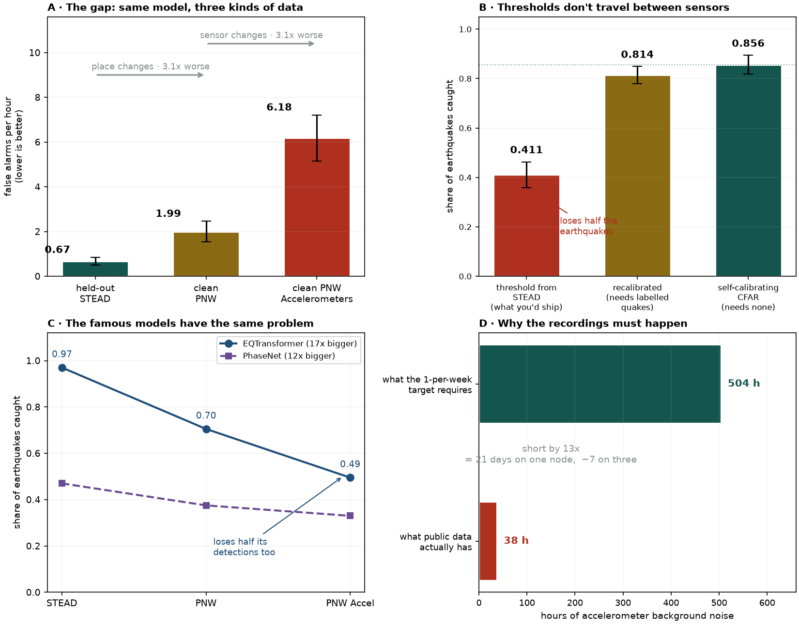
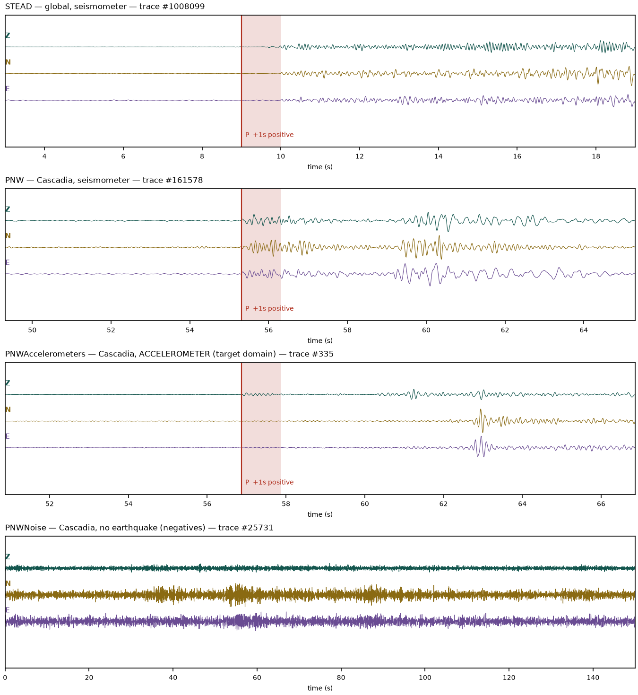
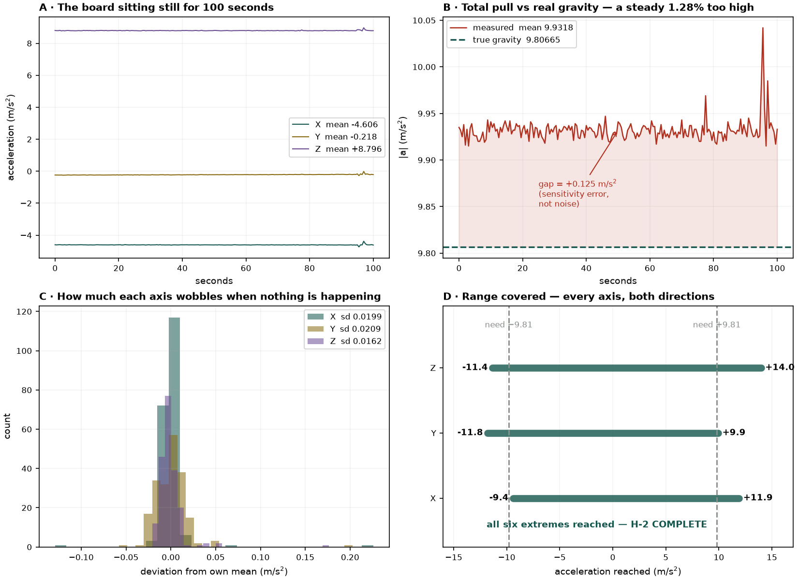

Results
What the data says so far
Set expectations: these are results on public data plus bench tests. Final results on your own recordings (Corpus 2) come later. Say why false alarms per hour is your main metric.
Public-data results
Walk through panels A–D. For each one: what was measured, and what it means for the device. Use the "human-scale" version of false-alarm rates too (e.g. days between false alarms).

The datasets
What's in STEAD, PNW, PNW Accelerometers and PNW Noise, and why you need all four.

Test H-1: sensor noise floor
Does the sensor meet its datasheet? What are the peaks between 6 and 13 Hz, and why do they matter for a 2–15 Hz detector?

Test H-2: gravity check
What does reaching all six gravity extremes show? Panel B labels the +1.28% gap a "sensitivity error". Your later notes (5 Sep) say it might be offset instead and was never measured. Decide what you can honestly claim, and say it.
